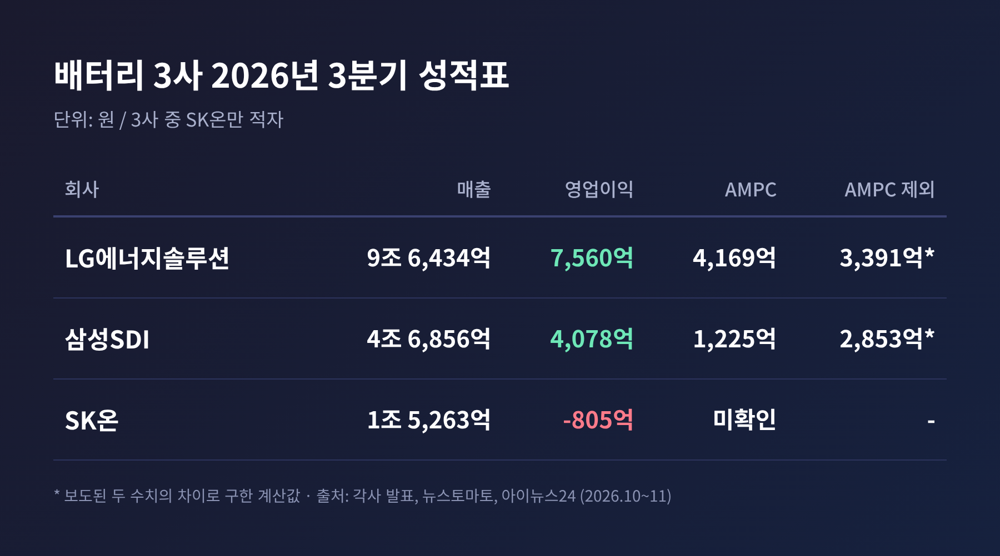
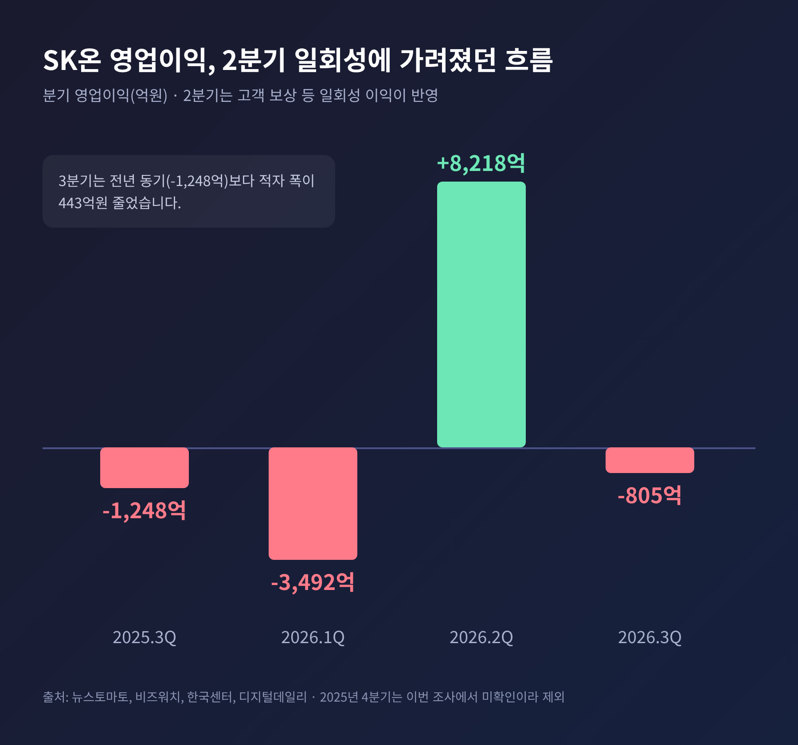
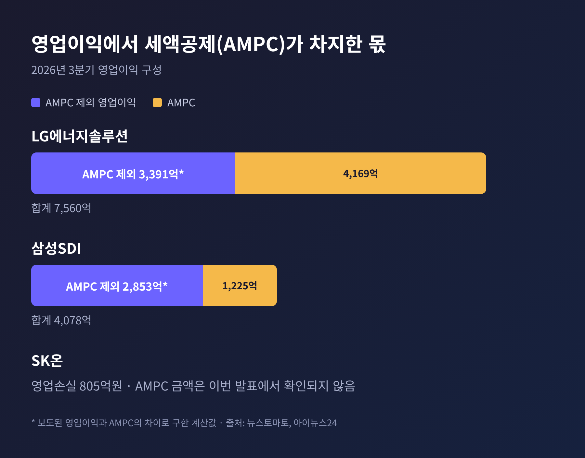
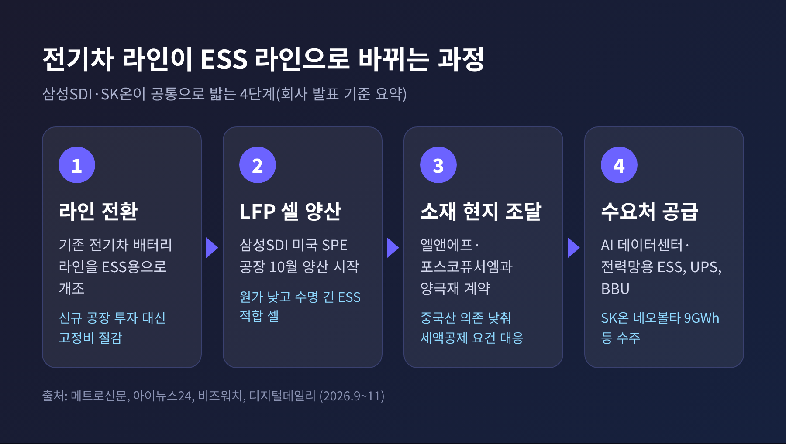
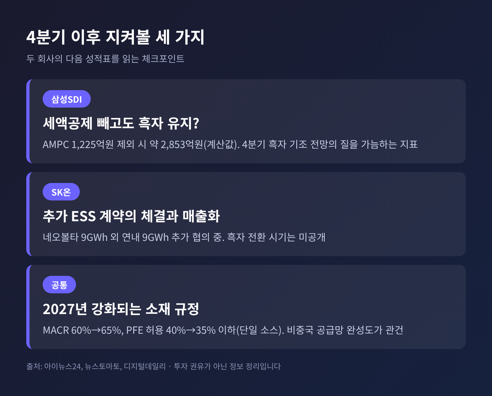

삼성SDI·SK온 3분기 실적, ESS 전환 속 흑자와 적자 갈린 이유

이번 글에서는 삼성SDI와 SK온의 2026년 3분기 실적을 정리해 보겠습니다. 두 회사 모두 전기차 배터리 라인을 ESS(에너지저장장치)용으로 바꾸고 있지만, 성적표는 흑자와 적자로 갈렸습니다.
세 줄 요약
- 삼성SDI는 영업이익 4,078억원으로 흑자 전환했습니다. 2023년 3분기 이후 12개 분기 만의 최고 수준입니다.
- SK온은 영업손실 805억원으로 2분기 만에 다시 적자를 냈습니다. 3사 가운데 유일합니다.
- 갈림길은 ESS 수주를 이미 매출로 돌리고 있느냐, 그리고 일회성 요인을 걷어낸 체력이 어떠냐였습니다.
■ 무슨 일이 있었나: 3사 성적표
삼성SDI는 10월 29일 3분기 매출 4조6,856억원, 영업이익 4,078억원을 발표했습니다. 전년 동기에는 5,913억원 적자였습니다. 전 분기 영업이익 2,038억원과 견주면 두 배 수준입니다. 순이익은 3,422억원입니다.
같은 날 SK이노베이션이 공개한 SK온의 성적은 달랐습니다. 매출 1조5,263억원, 영업손실 805억원입니다. 2분기에는 8,218억원의 영업이익을 냈으니, 한 분기 만에 흑에서 적으로 돌아선 셈입니다.

11월 6일 이 블로그에서 다룬 LG에너지솔루션은 영업이익 7,560억원이었습니다. 세 회사를 나란히 놓으면 LG에너지솔루션과 삼성SDI는 흑자, SK온만 적자입니다.
■ SK온의 적자를 어떻게 읽을까
SK온의 2분기 흑자는 사실 체질 개선의 결과만은 아니었습니다. 디지털데일리는 고객사 보상금과 미국 생산세액공제 확대를 원인으로 짚었습니다. 한국센터도 일회성 고객 보상이 반영된 역대 최대 이익이라고 표현했습니다. 다만 보상금 규모는 어느 기사에서도 확인되지 않습니다.
3분기에는 이 일회성 이익이 사라졌습니다. 여기에 주요 고객사의 전기차 배터리 판매량이 줄었습니다. 매출이 전 분기보다 48.2% 줄어든 이유입니다.

그렇다고 나빠지기만 한 것은 아닙니다. 전년 같은 분기의 영업손실 1,248억원과 비교하면 적자 폭은 443억원 줄었습니다. SK이노베이션은 비용 절감과 생산 효율화로 일회성 요인을 제외한 본원적 수익성이 좋아지고 있다고 설명했습니다.
한편 그룹 전체는 사정이 다릅니다. SK이노베이션 연결 영업이익은 3조7,043억원으로, 정유와 윤활유가 크게 늘었습니다. 배터리 자회사만 적자인 구조라는 점은 기억해 둘 만합니다.
■ 삼성SDI는 무엇이 달랐나
삼성SDI의 배터리 부문은 매출 4조4,099억원으로 전년보다 55.3% 늘었고, 영업이익 3,619억원으로 흑자로 돌아왔습니다. 성장의 축은 ESS, AI 데이터센터용 백업 배터리(BBU), 전동공구와 전기차용 원통형 전지였습니다.
핵심은 수주입니다. 삼성SDI는 올해 미국 ESS 시장에서만 60GWh 이상을 따냈다고 밝혔습니다. 10월에는 미국 스타플러스에너지(SPE) 공장에서 각형 LFP 셀 양산을 시작했습니다. 인디애나 시너지셀즈 공장은 ESS 생산 거점으로 우선 쓸 계획입니다.
전자재료 부문도 힘을 보탰습니다. 매출 2,757억원, 영업이익 459억원으로 반도체 패터닝 소재와 폴더블 폰용 디스플레이 필름이 늘었습니다. 다만 전체 영업이익의 대부분은 여전히 배터리에서 나왔습니다.
예전엔 전기차가 배터리 실적을 이끌었습니다. 지금은 데이터센터와 전력망이 그 자리를 채우고 있습니다.
다만 한 가지 단서가 붙습니다. 이번 영업이익에는 미국 첨단제조생산세액공제(AMPC) 1,225억원이 들어 있습니다. 이를 빼면 약 2,853억원이라는 계산이 나옵니다. 이 수치는 보도된 두 숫자의 차이로 구한 계산값입니다.

LG에너지솔루션도 AMPC 4,169억원을 빼면 약 3,391억원입니다. 3사 모두 세액공제가 이익의 상당 부분을 받치고 있습니다. SK온의 AMPC 금액은 이번 발표에서 확인되지 않았습니다.
■ 전기차 라인을 ESS로, 왜 서두를까
세 회사가 같은 방향으로 움직이는 배경은 비교적 분명합니다. 전기차 수요가 둔화됐고, 미국이 중국산 공급망을 배제하는 규정을 강화했습니다. 반대로 AI 데이터센터와 전력망 투자는 ESS 수요를 키우고 있습니다.
핵심 제품은 LFP(리튬인산철) 배터리입니다. 에너지 밀도는 낮지만 원가가 낮고 수명이 길며 열에 안정적이어서 ESS에 어울립니다. 그동안 이 시장은 중국 업체가 주도해 왔습니다.
SK온은 새 공장을 짓기보다 기존 전기차 라인을 바꾸는 쪽을 택했습니다. 미국 네오볼타와는 2027년부터 5년간 약 9GWh 규모의 LFP 파우치셀 공급계약을 맺었습니다. 연내 9GWh를 더 협의 중이며, 성사되면 총 18GWh가 됩니다. 다만 전환 규모와 가동률은 공개되지 않았습니다.
SK온은 컨퍼런스콜에서 중국산 셀을 쓰던 고객의 문의가 늘고 있다고 밝혔습니다. 동시에 실제 계약은 가격 경쟁력, 현지 조달 요건, 인증, 납기에 달려 있다고 선을 그었습니다. 문의가 곧 수주는 아니라는 뜻입니다.

■ 쟁점은 세액공제 규정과 2028년 이후
미국 제조세액공제(45X)는 중국산 소재 비중이 높으면 미국에서 만들어도 혜택을 주지 않습니다. 아이뉴스24에 따르면 부품 기준(MACR)은 2026년 60%에서 2027년 65%로 올라갑니다. 중국 연계 소재비 허용 비중은 40%에서 35% 이하로 내려갑니다. 이는 단일 소스 수치입니다.
그래서 양극재 공급선을 국내로 돌리고 있습니다. 삼성SDI는 3월 엘앤에프와 1조6,000억원 규모의 LFP 양극재 계약을 맺었다고 알려졌습니다. SK온은 엘앤에프, 포스코퓨처엠과 LFP 양극재 공급계약을 체결했습니다.
남는 질문은 두 가지입니다. 하나는 2028년 이후 물량을 북미 생산능력과 비중국 소재 조달로 확보할 수 있느냐입니다. 다른 하나는 신규 라인이 가동되며 고정비가 늘 때 마진이 유지되느냐입니다. LG에너지솔루션도 4분기 ESS 출하는 늘겠지만 초기 고정비로 마진이 내려갈 수 있다고 내다봤습니다.
■ 4분기와 그 이후를 보는 눈
삼성SDI는 4분기에도 ESS와 소형 배터리의 성장으로 흑자 기조를 이어가겠다고 밝혔습니다. 전력용 ESS와 UPS 장기 공급계약은 연내 확정이 목표이고, 국내 3차 ESS 중앙계약시장 입찰에도 참여할 예정입니다. 전기차는 유럽 수요가 늘고 미국은 당분간 약할 것으로 봤습니다. 2027년 전망은 공개되지 않았습니다.
SK온은 주요 고객사의 전기차 판매 회복과 ESS 추가 수주로 점진적인 개선을 기대한다고 했습니다. 구체적인 수치나 흑자 전환 시기는 제시하지 않았습니다.
지켜볼 대목은 세 가지입니다.
- 삼성SDI가 세액공제 효과를 빼고도 흑자 폭을 유지하는지
- SK온의 추가 ESS 계약이 실제로 체결되고 매출로 이어지는 시점
- 2027년 강화되는 소재 규정에 맞춘 비중국 공급망의 완성도

정리하면 이렇습니다. 같은 ESS 전환이라도 수주를 매출로 바꾼 속도가 3분기 성적을 갈랐습니다.
"흑자냐 적자냐보다 일회성과 세액공제를 걷어낸 체력이 중요하다." 이번 실적에서 제가 얻은 결론입니다.
두 회사의 4분기 성적표가 나오면, 오늘의 흑자와 적자가 일시적인 격차였는지 방향을 가르는 차이였는지 조금 더 분명해질 것입니다.
※ 이 글은 공개된 보도와 기업 발표를 정리한 해설이며, 특정 기업에 대한 투자 권유가 아닙니다.